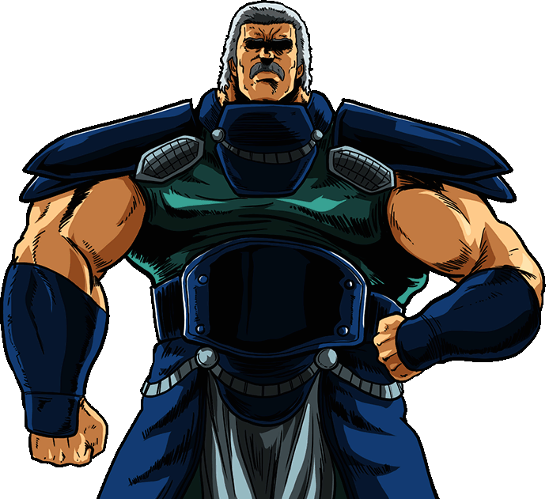

Un maestro dell'arte marziale "Nanto Goshasei", temuto per la sua incredibile agilità e la sua capacità di muoversi come l'acqua. Riaku del Mare è un avversario astuto e spietato, capace di prevedere i movimenti nemici e di colpire con la precisione di un dardo marino. Il suo spirito combattivo è indomito e la sua fedeltà incrollabile.